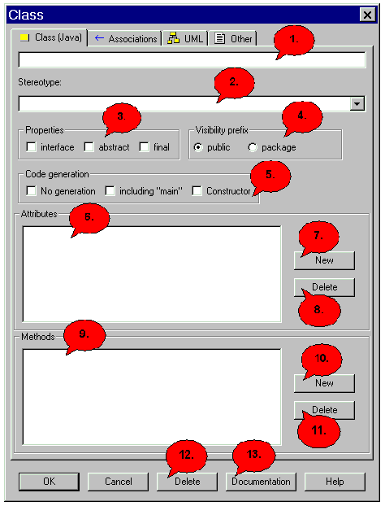
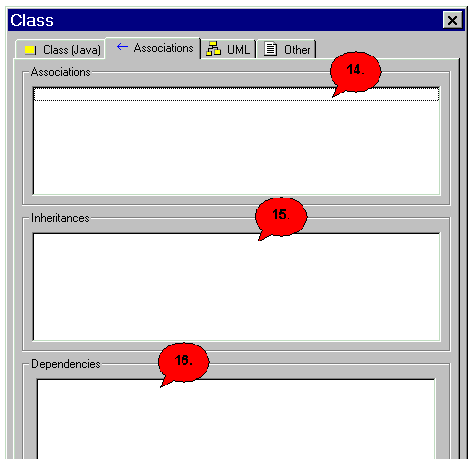
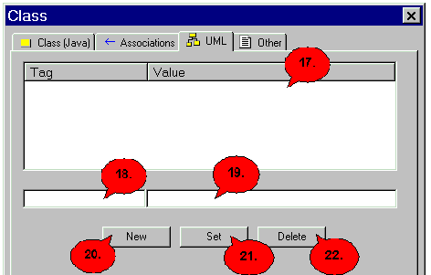
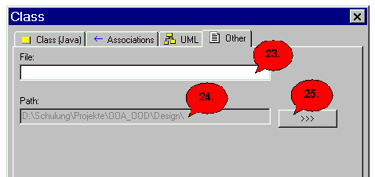

The Class Dialog |
|

1. Here you have to enter the name of the class. 2. Here you can define a stereotype. 3. Here you can define the characteristics of a class (not in C++). You have the chaice between: abstract: This class must be overwritten by a derived
class. 4. Here you can define the access of the method. You have the choice between: public: Everbody has access to this class.
5. Here you can determine whether the class should be at all generatable or whether the main method and/or a constructor or a destruktor (not in Java) are to be generated automatically. Imported Extern classes are not generatable in principle.
6. The attributes of the class are listed here. If you press the button 'New' you come into attribute dialog . With 'Del' you can remove the marked attribute, then the attribute is deleted after a repeated inquiry. By one doubleclick at the attribute you arrive into the attribute dialog of this attribute. 7. A new attribut. 8. Delete the marked attribut. 9. The methods of the class are listed here. If you press the button 'New' you come into method dialog . With 'Del' you can remove the marked method, then the method is deleted after a repeated inquiry. By one doubleclick at the method you arrive into the method dialog of this method. 10. A new method. 11. Delete the marked method. 12. Here you leave the dialog and store the entered data. 13. To leave the dialog without storing click 'Cancel'.  14. In order to remove the current class. If you pressed 'Del', you must click afterwards 'OK' in order to delete the class absolutely. 15. Here you come into the Docu-Dialog. 16. Here you come into the dialogue help, in whom you are for the moment. 17. Here the associations are indicated, all the same whether the class is the beginning or end class of the association. 18. Here the generalizations are indicated, all the same whether the class is at the beginning or end class of the transmission. 19. In this register map you can enter the file names. 20./22. Click here to choose the path. 21. The path of the file is shown. 23. In a C#-project you can define a namespace name here. This function is not available in Java.
|
Back to the dialog overview |